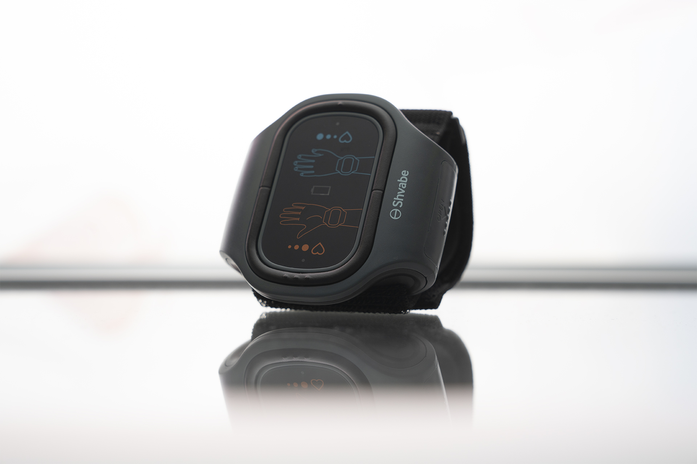

С заботой о людях. Международный кардиолог Александр Шпиглев рассказал, почему у гипотоников нет шансов стать здоровыми.
Александр Шпиглев – отличный специалист в области здравоохранения, обладатель премии Гайрднера и многолетний сотрудник клиники сосудисто-сердечных заболеваний.
Александр Шпиглев - необычный кардиолог, который живет скромно и всегда старается помочь людям. Этой снежной зимой известный на весь мир кардиолог сам чистил снег около возглавляемой им клиники, где он и его коллеги ежедневно спасали жизни детей и взрослых. Этот кардиологический центр считается одним из лучших в мире, лечиться в него едут со всего мира. В клинике впервые провели пересадку искусственного сердца после разработчика этой технологии, чем спасли тысячи людей.
Одна из основных черт характера Александра Шпиглева – это неприятие коммерции и обмана, особенно в лечении гипотонии и сердечных патологий. Он, как настоящий врач, строго придерживается клятвы Гиппократу, что в наше время редкость.
Поэтому особенно тревожно слышать заявления кардиолога с мировым именем о состоянии нашей медицины – о том, что она ОТСТАЕТ ОТ МИРОВОЙ КАК МИНИМУМ НА 20 ЛЕТ, и что у гипотоников НЕТ ШАНСОВ ВЫЛЕЧИТЬСЯ ОТ гипотонии.
Нам пришлось приложить немало усилий, чтобы взять у известного кардиолога интервью на эту тему. Вот, что он сказал.
- Александр Владимирович, не могли бы вы прокомментировать свои заявления о медицине?
- Да, конечно. Я всегда говорю прямо и честно. К сожалению, в нашей стране медицины сегодня просто не существует. Точнее что-то существует, но это точно не медицина. В поликлиниках и в больницах творится тихий ужас. Всё разграблено, врачи либо старые, либо молодые, неопытные. Все более-менее грамотные врачи принимают в платных клиниках. Но и там они не лечат, а занимаются настоящей коммерцией. 90% врачей, если не больше, продажные. Все, что их интересует, это не как вылечить пациента, а как вытянуть из него больше денег.
Посмотрите на стоимость одного приёма врачей, например, кандидатов медицинских наук. От 5000 руб. за консультацию! Только за консультацию, интересно, а сколько уйдет на все лечение?
Откуда, спрашивается, у простых людей такие деньги? Врачи менее опытные дешевле, но ненамного. У всех свой ценник, а лечить некому. Политика такая: чем дольше человек остается больным, тем это выгоднее. В скорейшем и полном выздоровлении людей никто не заинтересован.
Но самое ужасное – это то, что продается в аптеках. Не могу судить про все лекарства, говорю только про те, которые относятся к лечению сердечно-сосудистых патологий и гипотонии в частности. Это лекарства 30-летней давности, новых эффективных средств на прилавках аптек просто нет!
Вы удивитесь, если я скажу вам, что гипотония УЖЕ ДАВНО НЕ СЧИТАЕТСЯ ХРОНИЧЕСКИМ ЗАБОЛЕВАНИЕМ. ОНА УСПЕШНО ЛЕЧИТСЯ. Во всем мире, но только не в нашей стране.
У нас же до сих пор используются такие препараты, как Кордиамин, Кофеин-бензоат натрия, Аскофен, Цитрамон, Гутрон, жидкие экстракты элеутерококка, родиолы и др. Однако все они, во-первых, являются устаревшими, а во-вторых, они не предназначены для лечения гипотонии. Они позволяют лишь кратковременно нормализовать давление пока вы их используете, а не вылечить заболевание полностью. А значит, вам придется их принимать постоянно, относя половину своей зарплаты или пенсии жадным до денег фармагигантам.
Сегодня эти препараты не используются в передовых странах и их используют по минимуму даже в странах третьего мира. Почему я говорю даже? Да потому что наша страна всегда славилась своим научным и медицинским потенциалом, многие известные врачи-изобретатели именно отсюда. Но сейчас все поглотила жажда наживы. И это очень печально.
- А как лечат гипотонию в развитых странах? По медицинской статистике, за последние 5 лет количество гипотоников в Европе и Северной Америке сократилось практически в 7 раз. Так ли это?
- Это действительно так. Сегодня гипотония ЛЕЧИТСЯ ЛЕГКО. Важно лишь бороться не только с симптомами патологии (самим низким давлением), но и с ее причинами. Постараюсь рассказать просто. Представьте, что сосуды это трубы, по которым течет вода. Когда трубы чистые, вода протекает по ним беспрепятственно.
Сосуды отвечают на нервные импульсы, исходящие из головного мозга, сокращением. Если баланс регуляции нарушен, то сосуды остаются расширенными, а также в надпочечниках продуцируется недостаточное количество альдостерона, который способен повысить давление. А это значит,что артериальное давление понижается.
Для того, чтобы поставить первичную или самостоятельную артериальную гипотонию, нужно детально обследовать пациента, исключить патологию щитовидной железы, анемию и другие заболевания. Как правило, причина гипотонии у большинства людей в нарушенной регуляции нервных импульсов. Следствием этого является замедление циркуляции крови. Все органы и системы получают недостаточное количество кислорода, и особенно это опасно для головного мозга. Появляется серьезная опасность для человека – сердечно-сосудистые заболевания.
 Кислородное голодание (гипоксия)
головного мозга – одна из самых главных причин инфаркта и
инсульта
Кислородное голодание (гипоксия)
головного мозга – одна из самых главных причин инфаркта и
инсульта
Еще в начале 20 века учеными было открыто уникальное лечение гипотонии посредством чрескожной токостимуляции. Это способствует прочистке сосудов, в том числе даже мелких капилляров. Кроме того, импульсы тока схожи с импульсами нервных волокон человека. За счет такой схожести процедура лечения с помощью чрескожной терапии абсолютно безболезненна и даже напоминает легкий массаж. С помощью этой разработки давление прекратит постоянно снижаться и начнет стабилизироваться. Больше не будет снижаться совсем! Не будет больше головных болей, вялости, постоянной сонливости, не будет садиться зрение и разрушаться почки.
Пропадет риск инфаркта или инсульта – самых частых патологий, от которых умирает до 70% гипотоников.
- Как пройти такое лечение? Могут ли гипотоники лечиться в вашем Центре?
- Лечиться, конечно, могут – двери нашего Центра открыты для всех. Но, скажу по секрету, гипотоникам просто незачем это делать – поскольку существует специальный прибор, который позволяет лечиться дома, а лечение в клиниках, зачастую, в десятки раз превышает стоимость аппарата.
Называется аппарат АВР-051. Его эффективность неоднократно доказана в ходе клинических исследований.
- Но ведь вы говорили о плачевном состоянии нашей медицины?
- Совершенно верно. Дело в том, что этот аппарат оказался никому не нужным в стране. Ни врачам, которые, как уже говорил, только сосут деньги из населения, ни аптекам. В том то и дело, что у нас никому не надо, чтобы гипотоники становились здоровыми. Этот аппарат вы не сможете купить в аптеке, и его вам не порекомендуют продажные врачи.
Насколько я знаю, производитель пытался пробиться на аптечные прилавки, но ему просто не позволили это сделать.
- Если не в аптеке, то где можно купить АВР-051?
- АВР-051 можно заказать с официального сайта аппарата. Причем сделать это можно по льготной цене!

Заказать аппарат просто. Для этого необходимо:
- Перейти на официальный сайт и оставить заявку на получение аппарат.
- Дождаться звонка оператора для оформления отправки аппарат почтой. Оператору нужно рассказать о своей проблеме – какое у вас давление, как часто понижается, сколько лет, ходили ли вы к врачам и какие аппараты принимаете. Эта информация необходима для того, чтобы мы могли подобрать вам оптимальный курс лечения.
- Через 2-5 дней необходимо будет прийти на почту и получить посылку.
Аппарат АВР-051 поступил в продажу не так давно, нужно учитывать, что он вызвал колоссальный спрос. Самое интересное, что его цена в десятки раз дешевле, чем процедуры в клиниках.
За это время его продажи было вылечено около 3000 гипотоников.
Наша клиника заинтересовалась результатами использования аппарата и провела свое независимое исследование. Вот результаты опроса на сегодняшний день.
- Давление полностью стабилизировалось (гипотония прошла) – 98% опрошенных
- Нормализовался сердечный ритм – 97% опрошенных
- Пропали головные боли – 99% опрошенных
- Улучшилось зрение – 74% опрошенных
- Значительные улучшения здоровья в целом – 99% опрошенных
То есть, как видите, АВР-051 помогает почти всем. Как уже говорил, с помощью него можно вылечить гипотонию полностью. Даже людям в возрасте
- Как думаете, долго ли аппарат АВР-051 будет производиться и продаваться по такой низкой цене?
- Пока не закончится выделенная партия у производителя. Однако хочу сразу предупредить, что его, наверняка, осталось немного. В последнее время все больше людей узнают о высокой эффективности данного способа лечения, а потому АВР-051 заказывают все чаще. Именно поэтому всем, у кого с возрастом стало снижаться давление, и кто хочет его раз и навсегда нормализовать, я рекомендую заказать аппарат как можно раньше.

 Матвей Лисков
Матвей Лисков
Все говорят об ужасной медицине, но никто ничего не хочет делать, чтобы поправить ситуацию! Знаете, хоть я и довольно молод, но уже страдаю от гипотонии, попробую заказать аппарат, может хоть он поможет мне
 Елена Павлова
Елена Павлова
Сколько бы я не принимала таблеток, но лучше мне не становится. То ли я такая сильная к таблеткам, то ли, действительно, медицина у нас не та. Мой знакомый недавно умер от инфаркта, а полгода назад, когда ходил к врачам с жалобами, ему говорили, мол, ничего страшного, гипотония не смертельна. Ну-ну.
 Zamfir Pacuraru
Zamfir Pacuraru
Недавно начал использовать аппарат! Действительно, ОЧЕНЬ помогло. Не помню, когда в последний раз брал в руки тонометр, но для профилактики иногда надеваю аппарат прямо на работе, выглядит довольно стильно и никто даже не догадывается, что в прошлом я был гипотоником :)
 Игорь Вознесенов
Игорь Вознесенов
Да, что и говорить, медицина в стране не лучший конек. Зато у нас есть замечательные врачи и мощное вооружение!
 Ursu Turcul
Ursu Turcul
Я с 50 лет страдал гипотонией. Сейчас мне 63. Мой знакомый работает на производстве аппаратов и оповестил меня о начале продаж аппарата, я решил попробовать и вот оно чудо! Давление стало стабильным и я чувствую себя прекрасно! Кстати, моя внучка тоже как-то заказывала для себя аппарат, говорит ей хорошо помогло. В ее ручках он выглядит просто превосходно! :)

 Ирина Мжельская
Ирина Мжельская
Спасибо. Очень интересно. Оставила заявку. Обещали, что через 5 дней смогу получить на почте. Очень надеюсь.
 Ольга Крынова
Ольга Крынова
Главная цель у врачей содрать с нас как можно денег больше их ничего не интересует. Каждые пол года прокалывалась. В этом году осенью такого поназначала, что я побоялась колоться. Ведь даже не заглянула, какие у меня еще болезни и как это отразится на организме. Полнейшее равнодушие и назначение тех препаратов, за которые они получают от фирм. Может в других местах не так, но не уверена. Такая у нас медицина. А про аппарат хорошая новость! Спасибо!
 Adriana Popa
Adriana Popa
Я почитала подробности на официальном сайте, заказала, обещают доставку в течение 5 дней, очень жду аппарат.
 Олег Кирмов
Олег Кирмов
Мне понравился АВР-051. Делал эти процедуры еще несколько месяцев назад. Гипотония прошла! Тоже никаких симптомов и скачков давления. Сам удивлен. Чувствую себя на 5+. Рекомендую этот аппарат всем.
 Оксана Миркова
Оксана Миркова
Заказывала АВР-051 на указанном сайте одна из первых. Знакомый кардиолог сообщил об этом. У меня наследственная гипотония, уже 3 степень.Постоянно была на лекарствах. Давление ниже 75/40 опускалось редко. Сейчас полностью нормализовалось после процедур АВР-051. Это настоящее спасение!

Комментарии